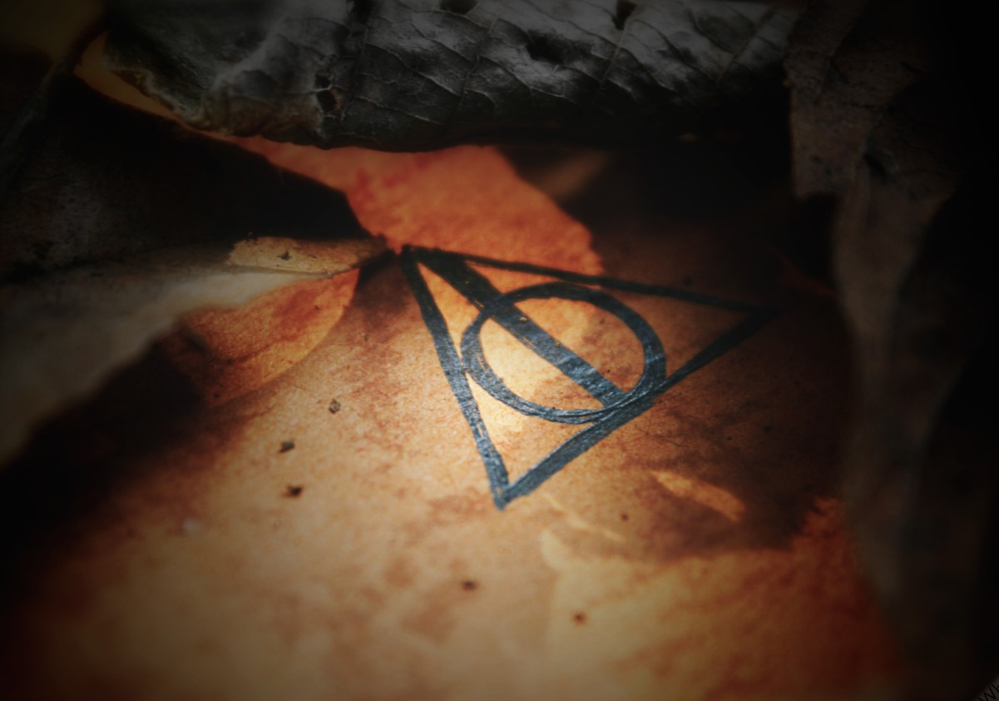
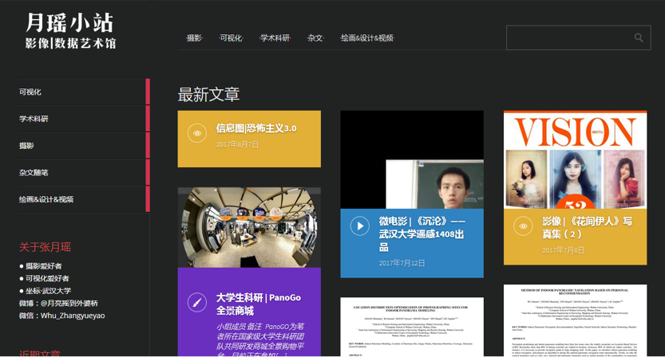

随笔 Notes

[3]想法，但希望不止于想法
by zhang / 持续记录 / 2022.9.7不时、常常、频繁地冒出很多希望，理想 前行时，或许会感到压力 回头观望时，可能会感觉遗憾 ... 它们听起来完全不可靠， 更多的时候，会感觉它们完全矛盾，无法抉择，令人心生茫然，感觉无从下手 但是 将他们记载在案，偶尔去实现一个 应该也是很不错的人生动力
Read More 阅读

[1]纪念倒闭的首个个人网站
个人网站 / 云/备案 / 2022.9.6这个站点的第一篇日志将是纪念它的前身。还在大四的时候，什么都不会，硬是从0开始折腾出了Wordpress搭的个人网站，买了阿里域名，买了腾讯云服务器，做了超级麻烦的备案。 后来因为长期不使用、服务器费用昂贵、备案审查，各种各样的原因...网站就这样倒闭了，可惜了那些记录了很多心境的日志... 现在才发现，Github是多么的好用啊...
Read More